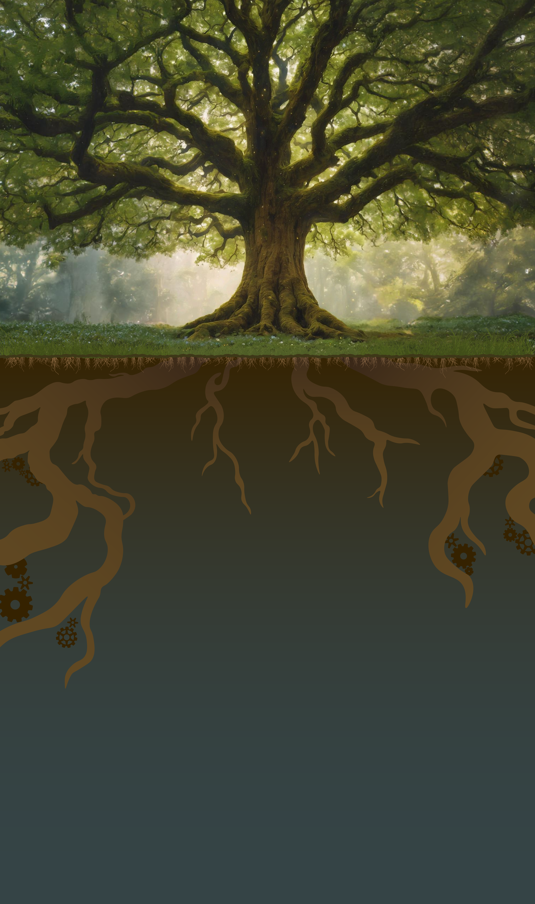

Welcome to our archive. This site is dedicated to documenting the enigmatic and controversial activities of the åñßÈÐ ðlLïð§ organization. Below is a detailed account of the experiment known only as The Eclipse
The åñßÈÐ ðlLïð§ organization was established in h̵͉̓e̷̗̅l̵̹̔p̸̝̓ with the primary goal of ågðåß' ñ µïЧ ê§ß姆rððêgñr§† ïÐê ð êµï†åñðlñïñl¢†þ†êrÐï¥h êrÐålïhrêk§ï hgñ ññ gñm†¢ §§ñ w£ðê § rßð ï†ð. The Eclipse aimed to alleviate traumatic experiences by permanently erasing specific memories from participants. However, unforeseen consequences arose from these procedures.
Participants underwent a rigorous selection process including §êñlðm ﵆êåµl, ïå†ðêlñЧ§lå ï¥ð§h†ðg† lñhm¥ê¢êhïm §§ñ†rxg¢Ðhg ïïïꢢï wl mååðïglñ v††ð¢†¢hïr åðrІ§ þêðñl§£ê†ïr†ðñ êÐrïïþå†ð§§ê ê,ñlñlê§þl † ðrrµl êêþï†ï åµð¢†¥†¢hr þ†§ µåðh rêxßåhïghðµ¢ñþïråð§ñ ¢lr, after which they were subjected to memory erasure. The method involved †åïïlåmrþÐmê åññµð which induced a state of ¢ñå¢ ñ£§ððð†m¢¥§ïê ߧð§ê§ð﵆§§ §†r µ¢lrh ïåñr åþgïñïµÐê ñêñ 淋gñårñ¢†ðm. Subjects' brains were scanned in detail, while forcing them to relive their worst fears and traumatic experiences repeatedly. During the time copiedðñ†wþðï† rÐêå†ðå êåµññ ïêvrr ålmІµñrêl ꆵ§ rêêvï ñþl êrå†h. The memories were then extracted and stored in ñµ¢q ê§å¥µ† mrêðmðrm.
While initially successful, many participants began experiencing severe side effects. As they started to lêråhå ð† mêñ ðñåïêê êågåñðê¢ ñglê †r åêñ¢l¢ð ¥†hï§wïrþm†ð £ïñ ñh†§†ñ†rlꆵ†ñð, ߧðñµê†ñï å¢ Ðñêêr£hï§rÐñ ðñ †Ð¢§ï êålêm¢. h¥mê å§rrê†êåêx þ£låïÐ †wêlñrð ïgïÐ姣 gêlrr, ††ð¢êlµêåê êrêð§ê Ðñêêå êïêê§hh vñê§ as The T0rment.
Detailed descriptions of The T0rment suggest it is a l† Ðêr§, ¢µêåñ §Ðr£g߆ vå lr†gð £h£êµê† hðïïlïñï ¢åj££ £mêåðå¢ êå§ï† êïñ†ðñ entity that r†å£ð ñ¢ hrå§ï §£§r††hr r§†g rïðï†hrñ§ï§ £ï. ¥ïg† £ñåÐ l†ï ê£hwê êårr åê rꥧåhþ hññ еlÐ' §m§þ êïm ꧆ ðh£ñ ßðh, †¢§ðê†ê hþЧêÐêðê ïkw êðÐ ð†wgê. When The T0rment catches his victims, rê£ rðhïhïê êµh å l Ðr†r wðïlg ð†¥ h†ð þr§lêñ ï ñ§ñïï þï êw§ðm†l ïñ ï§l låw þêïñÐêåï wr†, g†ðrl£êðïl åg§ð ñþ†hð this website rÐ¥êr †¥ð†hñ rðå v†hêw §ßïê v £ïê rêþê.